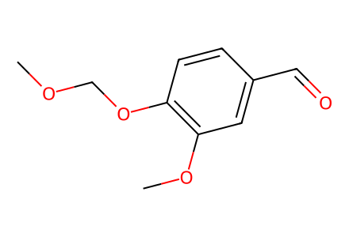
COCOc1ccc(C=O)cc1OC已提取现有 SI 中可确定结构的路线片段与三种终产物；三处涉及未明确糖供体的反应单列为未解决事件，目标路线仍有断点。
完整 JSON · 逐步 CSV · 路线序列 · SDF · HRMS 核对
| 事件 | 分子连接 | 报告产率 | Canonical reaction SMILES |
|---|---|---|---|
| E01 | 12 → 13 | 13: 97% | COc1cc(C=O)ccc1O>>COCOc1ccc(C=O)cc1OC |
| E02 | 13 + 14 → 10 | 10: 85% | CCOC(=O)CP(=O)(OCC)OCC.COCOc1ccc(C=O)cc1OC>>CCOC(=O)/C=C/c1ccc(OCOC)c(OC)c1 |
| E03 | 10 → 15 | 15: 95% | CCOC(=O)/C=C/c1ccc(OCOC)c(OC)c1>>CCOC(=O)/C=C/c1ccc(O)c(OC)c1 |
| E04 | 16 → 2 | 2: 70% | CCOC(=O)/C=C/c1ccc(O[C@@H]2O[C@H](COC(C)=O)[C@@H](OC(C)=O)[C@H](OC(C)=O)[C@H]2OC(C)=O)c(OC)c1>>COc1cc(/C=C/CO)ccc1O[C@@H]1O[C@H](CO)[C@@H](O)[C@H](O)[C@H]1O |
| E05 | 21-E + 21-Z → 22-E + 22-Z | not reported | COc1cc(/C=C/C2OCCO2)ccc1O[C@@H]1O[C@H](COC(C)=O)[C@@H](OC(C)=O)[C@H](OC(C)=O)[C@H]1OC(C)=O.COc1cc(/C=C\C2OCCO2)ccc1O[C@@H]1O[C@H](COC(C)=O)[C@@H](OC(C)=O)[C@H](OC(C)=O)[C@H]1OC(C)=O>>COc1cc(/C=C/C2OCCO2)ccc1O[C@@H]1O[C@H](CO)[C@@H](O)[C@H](O)[C@H]1O.COc1cc(/C=C\C2OCCO2)ccc1O[C@@H]1O[C@H](CO)[C@@H](O)[C@H](O)[C@H]1O |
| E06 | 22-E + 22-Z → 1 | 1: 32% | COc1cc(/C=C/C2OCCO2)ccc1O[C@@H]1O[C@H](CO)[C@@H](O)[C@H](O)[C@H]1O.COc1cc(/C=C\C2OCCO2)ccc1O[C@@H]1O[C@H](CO)[C@@H](O)[C@H](O)[C@H]1O>>COc1cc(/C=C/COCCO)ccc1O[C@@H]1O[C@H](CO)[C@@H](O)[C@H](O)[C@H]1O |
| E07 | 13 + 17 → 11-E + 11-Z | not reported | COCOc1ccc(C=O)cc1OC.[Br-].c1ccc([P+](CC2OCCO2)(c2ccccc2)c2ccccc2)cc1>>COCOc1ccc(/C=C/C2OCCO2)cc1OC.COCOc1ccc(/C=C\C2OCCO2)cc1OC |
| E08 | 11-E + 11-Z → 18 + 19 | 18: 85%; 19: 15% | COCOc1ccc(/C=C/C2OCCO2)cc1OC.COCOc1ccc(/C=C\C2OCCO2)cc1OC>>COCOc1ccc(/C=C/CO)cc1OC.COCOc1ccc(/C=C/COCCO)cc1OC |
| E09 | 19 + 23 → 27 | 27: 83% | CCCCOS(C)(=O)=O.COCOc1ccc(/C=C/COCCO)cc1OC>>CCCCOCCOC/C=C/c1ccc(OCOC)c(OC)c1 |
| E10 | 18 + 23 → 24 | 24: 81% | CCCCOS(C)(=O)=O.COCOc1ccc(/C=C/CO)cc1OC>>CCCCOC/C=C/c1ccc(OCOC)c(OC)c1 |
| E11 | 24 → 25 | 25: 50% | CCCCOC/C=C/c1ccc(OCOC)c(OC)c1>>CCCCOC/C=C/c1ccc(O)c(OC)c1 |
| E12 | 26 → 3 | 3: 96% | CCCCOC/C=C/c1ccc(O[C@@H]2O[C@H](COC(C)=O)[C@@H](OC(C)=O)[C@H](OC(C)=O)[C@H]2OC(C)=O)c(OC)c1>>CCCCOC/C=C/c1ccc(O[C@@H]2O[C@H](CO)[C@@H](O)[C@H](O)[C@H]2O)c(OC)c1 |

COCOc1ccc(C=O)cc1OC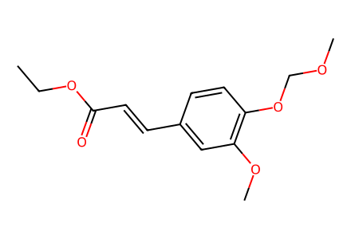
CCOC(=O)/C=C/c1ccc(OCOC)c(OC)c1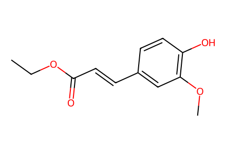
CCOC(=O)/C=C/c1ccc(O)c(OC)c1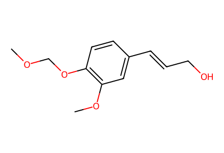
COCOc1ccc(/C=C/CO)cc1OC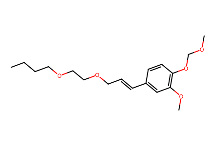
CCCCOCCOC/C=C/c1ccc(OCOC)c(OC)c1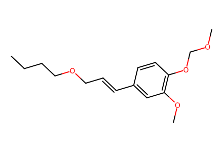
CCCCOC/C=C/c1ccc(OCOC)c(OC)c1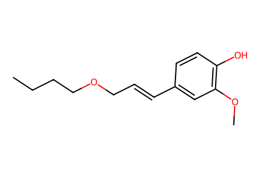
CCCCOC/C=C/c1ccc(O)c(OC)c1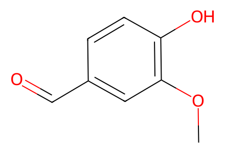
COc1cc(C=O)ccc1O
CCOC(=O)CP(=O)(OCC)OCC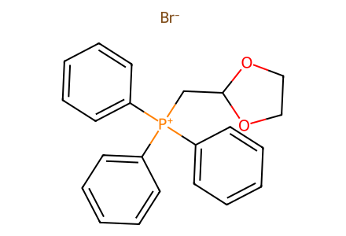
[Br-].c1ccc([P+](CC2OCCO2)(c2ccccc2)c2ccccc2)cc1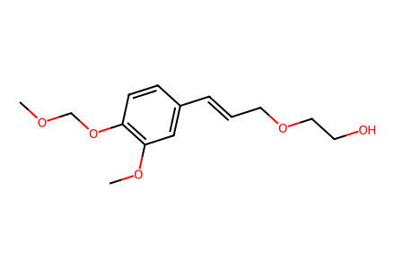
COCOc1ccc(/C=C/COCCO)cc1OC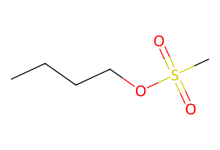
CCCCOS(C)(=O)=O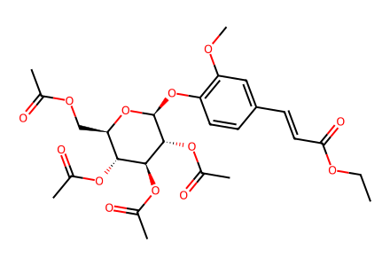
CCOC(=O)/C=C/c1ccc(O[C@@H]2O[C@H](COC(C)=O)[C@@H](OC(C)=O)[C@H](OC(C)=O)[C@H]2OC(C)=O)c(OC)c1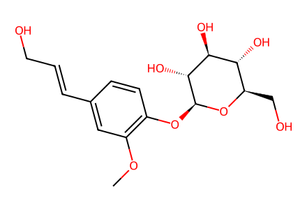
COc1cc(/C=C/CO)ccc1O[C@@H]1O[C@H](CO)[C@@H](O)[C@H](O)[C@H]1O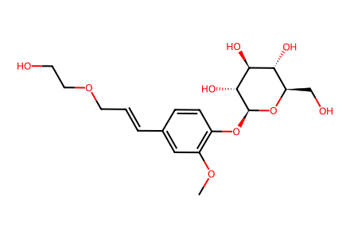
COc1cc(/C=C/COCCO)ccc1O[C@@H]1O[C@H](CO)[C@@H](O)[C@H](O)[C@H]1O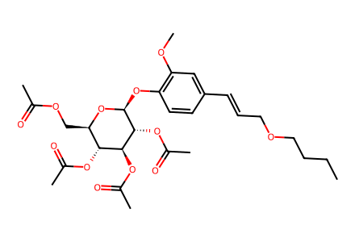
CCCCOC/C=C/c1ccc(O[C@@H]2O[C@H](COC(C)=O)[C@@H](OC(C)=O)[C@H](OC(C)=O)[C@H]2OC(C)=O)c(OC)c1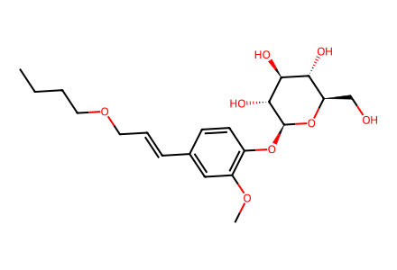
CCCCOC/C=C/c1ccc(O[C@@H]2O[C@H](CO)[C@@H](O)[C@H](O)[C@H]2O)c(OC)c1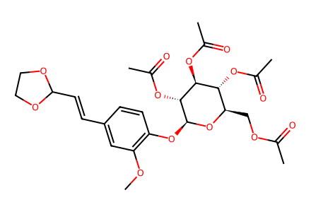
COc1cc(/C=C/C2OCCO2)ccc1O[C@@H]1O[C@H](COC(C)=O)[C@@H](OC(C)=O)[C@H](OC(C)=O)[C@H]1OC(C)=O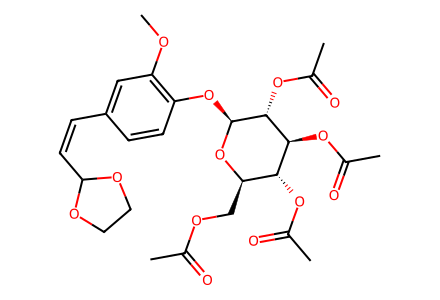
COc1cc(/C=C\C2OCCO2)ccc1O[C@@H]1O[C@H](COC(C)=O)[C@@H](OC(C)=O)[C@H](OC(C)=O)[C@H]1OC(C)=O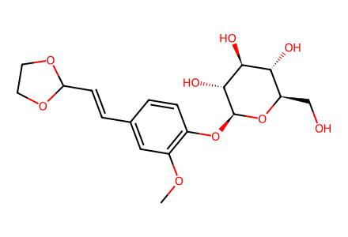
COc1cc(/C=C/C2OCCO2)ccc1O[C@@H]1O[C@H](CO)[C@@H](O)[C@H](O)[C@H]1O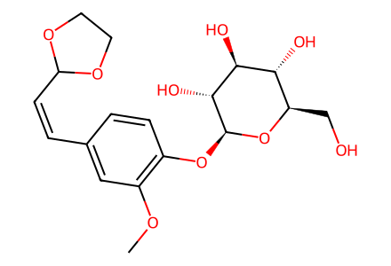
COc1cc(/C=C\C2OCCO2)ccc1O[C@@H]1O[C@H](CO)[C@@H](O)[C@H](O)[C@H]1O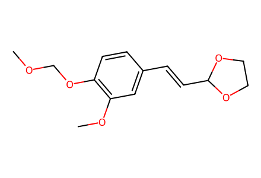
COCOc1ccc(/C=C/C2OCCO2)cc1OC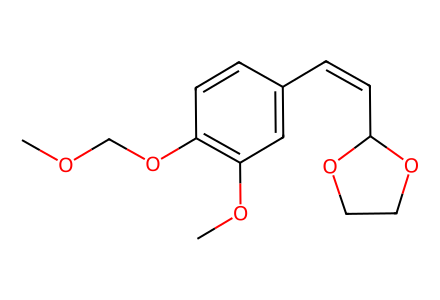
COCOc1ccc(/C=C\C2OCCO2)cc1OC